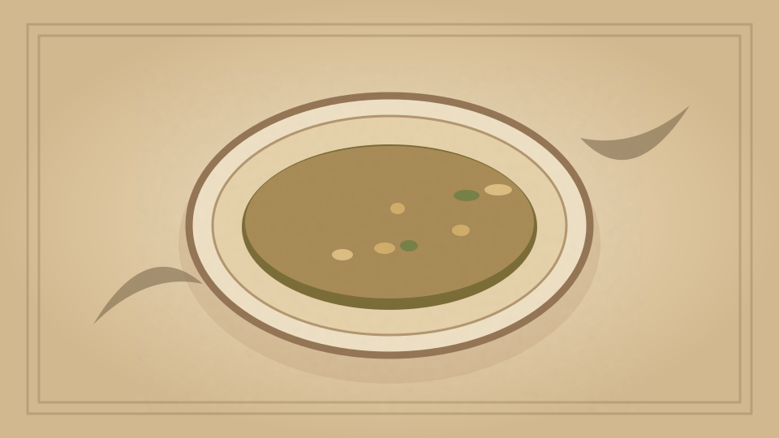

1910 · Fannie Merritt Farmer · SOUPS
Cream of Watercress Soup
The Boston Cooking-School Cook Book
❧ ───── ❦ ───── ❧

Historical Recipe
The following text is extracted from the 1910 edition, retaining historical terminology and quantities.
Original Ingredients & Directions
2 cups White Stock I, II or III
2 bunches watercress
3 tablespoons butter
2 tablespoons flour
½ cup milk
Yolk 1 egg
Salt
Pepper
Cut finely leaves of watercress; cook five minutes in two tablespoons butter, add stock, and boil five minutes. Thicken 125 with butter and flour cooked together, add salt and pepper. Just before serving, add milk and egg yolk, slightly beaten. Serve with slices of French bread, browned in oven.
Automatically extracted transcription; editorial verification pending. Historical instructions may not meet modern food-safety standards.